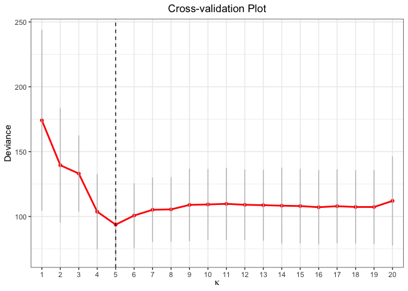
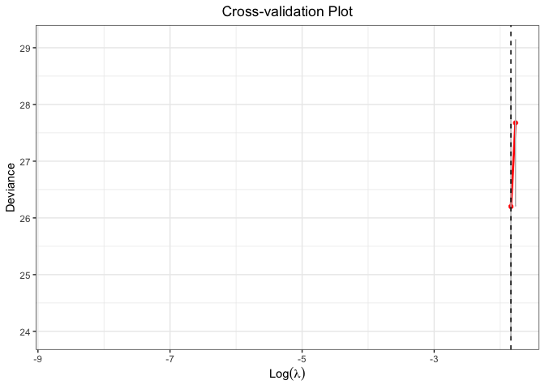

The goal of glmtlp is to fit generalized linear models with l0, l1 and truncated lasso penalty with a fast procedure.
Installation
You can install the released version of glmtlp from CRAN with:
install.packages("glmtlp")Examples for Gaussian Regression Models
The following are three examples which show you how to use glmtlp to fit gaussian regression models:
library(glmtlp)
data("gau_data")
colnames(gau_data$X)[gau_data$beta != 0]
#> [1] "V1" "V6" "V10" "V15" "V20"
# Cross-Validation using TLP penalty
cv.fit <- cv.glmtlp(gau_data$X, gau_data$y, family = "gaussian", penalty = "tlp", ncores=2)
coef(cv.fit)[abs(coef(cv.fit)) > 0]
#> intercept V1 V6 V10 V15 V20
#> -0.009692127 1.240201054 0.883169910 0.725706771 1.125980744 0.981390567
plot(cv.fit)
# Single Model Fit using TLP penalty
fit <- glmtlp(gau_data$X, gau_data$y, family = "gaussian", penalty = "tlp")
coef(fit, lambda = cv.fit$lambda.min)
#> intercept V1 V2 V3 V4 V5
#> -0.009692127 1.240201054 0.000000000 0.000000000 0.000000000 0.000000000
#> V6 V7 V8 V9 V10 V11
#> 0.883169910 0.000000000 0.000000000 0.000000000 0.725706771 0.000000000
#> V12 V13 V14 V15 V16 V17
#> 0.000000000 0.000000000 0.000000000 1.125980744 0.000000000 0.000000000
#> V18 V19 V20
#> 0.000000000 0.000000000 0.981390567
predict(fit, X = gau_data$X[1:5, ], lambda = cv.fit$lambda.min)
#> [1] 0.1906169 2.2279315 -1.4255560 0.9313560 -2.8151758
plot(fit, xvar = "log_lambda", label = TRUE)
# Cross-Validation using L0 penalty
cv.fit <- cv.glmtlp(gau_data$X, gau_data$y, family = "gaussian", penalty = "l0", ncores=2)
coef(cv.fit)[abs(coef(cv.fit)) > 0]
#> intercept V1 V6 V10 V15 V20
#> -0.009687042 1.240319880 0.883378583 0.725607300 1.125958218 0.981544178
plot(cv.fit)
# Single Model Fit using L0 penalty
fit <- glmtlp(gau_data$X, gau_data$y, family = "gaussian", penalty = "l0")
coef(fit, kappa = cv.fit$kappa.min)
#> intercept V1 V2 V3 V4 V5
#> -0.009687042 1.240319880 0.000000000 0.000000000 0.000000000 0.000000000
#> V6 V7 V8 V9 V10 V11
#> 0.883378583 0.000000000 0.000000000 0.000000000 0.725607300 0.000000000
#> V12 V13 V14 V15 V16 V17
#> 0.000000000 0.000000000 0.000000000 1.125958218 0.000000000 0.000000000
#> V18 V19 V20
#> 0.000000000 0.000000000 0.981544178
predict(fit, X = gau_data$X[1:5, ], kappa = cv.fit$kappa.min)
#> [1] 0.190596 2.228306 -1.425994 0.931749 -2.815322
plot(fit, xvar = "kappa", label = TRUE)
# Cross-Validation using L1 penalty
cv.fit <- cv.glmtlp(gau_data$X, gau_data$y, family = "gaussian", penalty = "l1", ncores=2)
coef(cv.fit)[abs(coef(cv.fit)) > 0]
#> intercept V1 V4 V6 V10 V11
#> -0.03589837 1.09063811 -0.03020625 0.70163818 0.56874685 0.04658280
#> V14 V15 V19 V20
#> 0.01969490 0.96583003 -0.06633302 0.81279715
plot(cv.fit)
# Single Model Fit using L1 penalty
fit <- glmtlp(gau_data$X, gau_data$y, family = "gaussian", penalty = "l1")
coef(fit, lambda = cv.fit$lambda.min)
#> intercept V1 V2 V3 V4 V5
#> -0.03589837 1.09063811 0.00000000 0.00000000 -0.03020625 0.00000000
#> V6 V7 V8 V9 V10 V11
#> 0.70163818 0.00000000 0.00000000 0.00000000 0.56874685 0.04658280
#> V12 V13 V14 V15 V16 V17
#> 0.00000000 0.00000000 0.01969490 0.96583003 0.00000000 0.00000000
#> V18 V19 V20
#> 0.00000000 -0.06633302 0.81279715
predict(fit, X = gau_data$X[1:5, ], lambda = cv.fit$lambda.min)
#> [1] 0.03978789 1.83217872 -0.97812631 0.54083363 -2.01470751
plot(fit, xvar = "lambda", label = TRUE)
Examples for Logistic Regression Models
The following are three examples which show you how to use glmtlp to fit logistic regression models:
# Cross-Validation using L1 penalty
cv.fit <- cv.glmtlp(bin_data$X, bin_data$y, family = "binomial", penalty = "tlp", ncores=2)
coef(cv.fit)[abs(coef(cv.fit)) > 0]
#> intercept V6 V20
#> -0.1347141 0.8256183 0.9940325
plot(cv.fit)
#> Warning: Removed 98 row(s) containing missing values (geom_path).
#> Warning: Removed 98 rows containing missing values (geom_point).
fit <- glmtlp(bin_data$X, bin_data$y, family = "binomial", penalty = "tlp")
coef(fit, lambda = cv.fit$lambda.min)
#> intercept V1 V2 V3 V4 V5 V6
#> -0.1347141 0.0000000 0.0000000 0.0000000 0.0000000 0.0000000 0.8256183
#> V7 V8 V9 V10 V11 V12 V13
#> 0.0000000 0.0000000 0.0000000 0.0000000 0.0000000 0.0000000 0.0000000
#> V14 V15 V16 V17 V18 V19 V20
#> 0.0000000 0.0000000 0.0000000 0.0000000 0.0000000 0.0000000 0.9940325
predict(fit, X = bin_data$X[1:5, ], type = "response", lambda = cv.fit$lambda.min)
#> [1] 0.42562483 0.89838483 0.09767039 0.90898462 0.20822294
plot(fit, xvar = "log_lambda", label = TRUE)
# Cross-Validation using L1 penalty
cv.fit <- cv.glmtlp(bin_data$X, bin_data$y, family = "binomial", penalty = "l0", ncores=2)
coef(cv.fit)[abs(coef(cv.fit)) > 0]
#> intercept V1 V6 V20
#> -0.07161141 0.82529133 1.00648111 1.10064640
plot(cv.fit)
fit <- glmtlp(bin_data$X, bin_data$y, family = "binomial", penalty = "l0")
coef(fit, kappa = cv.fit$kappa.min)
#> intercept V1 V2 V3 V4 V5
#> -0.07161141 0.82529133 0.00000000 0.00000000 0.00000000 0.00000000
#> V6 V7 V8 V9 V10 V11
#> 1.00648111 0.00000000 0.00000000 0.00000000 0.00000000 0.00000000
#> V12 V13 V14 V15 V16 V17
#> 0.00000000 0.00000000 0.00000000 0.00000000 0.00000000 0.00000000
#> V18 V19 V20
#> 0.00000000 0.00000000 1.10064640
predict(fit, X = bin_data$X[1:5, ], kappa = cv.fit$kappa.min)
#> [1] -0.2806496 2.9558219 -2.3128480 2.9849274 -0.9936015
plot(fit, xvar = "kappa", label = TRUE)
# Cross-Validation using L1 penalty
cv.fit <- cv.glmtlp(bin_data$X, bin_data$y, family = "binomial", penalty = "l1", ncores=2)
coef(cv.fit)[abs(coef(cv.fit)) > 0]
#> intercept V1 V3 V4 V5 V6
#> -0.04593027 0.79539914 0.06262547 0.19102595 0.06793078 1.05865751
#> V8 V9 V10 V11 V13 V15
#> -0.06306159 -0.09101621 0.71050104 0.01838134 0.38267285 0.74771918
#> V19 V20
#> 0.26189535 1.08151085
plot(cv.fit)
fit <- glmtlp(bin_data$X, bin_data$y, family = "binomial", penalty = "l1")
coef(fit, lambda = cv.fit$lambda.min)
#> intercept V1 V2 V3 V4 V5
#> -0.04593027 0.79539914 0.00000000 0.06262547 0.19102595 0.06793078
#> V6 V7 V8 V9 V10 V11
#> 1.05865751 0.00000000 -0.06306159 -0.09101621 0.71050104 0.01838134
#> V12 V13 V14 V15 V16 V17
#> 0.00000000 0.38267285 0.00000000 0.74771918 0.00000000 0.00000000
#> V18 V19 V20
#> 0.00000000 0.26189535 1.08151085
predict(fit, X = bin_data$X[1:5, ], type = "response", lambda = cv.fit$lambda.min)
#> [1] 0.32934063 0.91919949 0.02726264 0.94908173 0.02600642
plot(fit, xvar = "lambda", label = TRUE)
References
Shen, X., Pan, W., & Zhu, Y. (2012). Likelihood-based selection and sharp parameter estimation. Journal of the American Statistical Association, 107(497), 223-232. https://doi.org/10.1080/01621459.2011.645783.
Shen, X., Pan, W., Zhu, Y., & Zhou, H. (2013). On constrained and regularized high-dimensional regression. Annals of the Institute of Statistical Mathematics, 65(5), 807-832. https://doi.org/10.1007/s10463-012-0396-3
Li, C., Shen, X., & Pan, W. (2021). Inference for a Large Directed Graphical Model with Interventions. arXiv preprint arXiv:2110.03805. https://arxiv.org/abs/2110.03805
Tibshirani, R., Bien, J., Friedman, J., Hastie, T., Simon, N., Taylor, J., & Tibshirani, R. J. (2012). Strong rules for discarding predictors in lasso‐type problems. Journal of the Royal Statistical Society: Series B (Statistical Methodology), 74(2), 245-266. https://doi.org/10.1111/j.1467-9868.2011.01004.x.
Yang, Yi, and Hui Zou. “A coordinate majorization descent algorithm for l1 penalized learning.” Journal of Statistical Computation and Simulation 84.1 (2014): 84-95. https://doi.org/10.1080/00949655.2012.695374.